Press
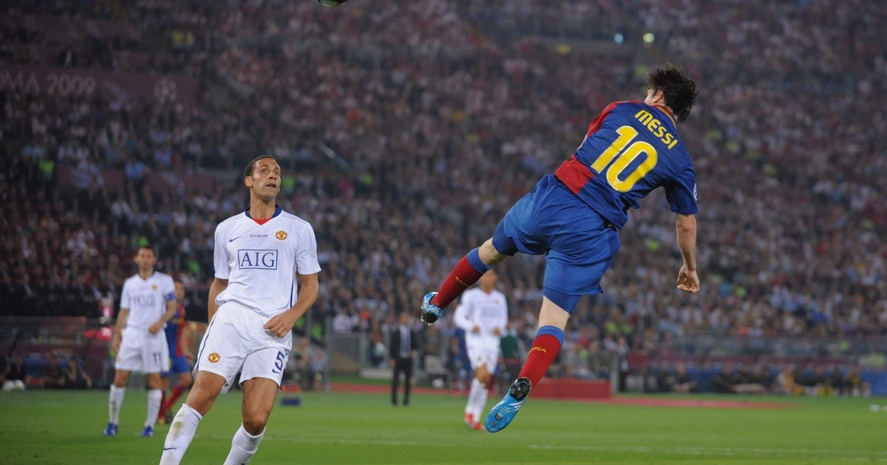
The New York Times Digital artwork of Lionel Messi's favorite goal sold for $1.87M to mystery buyer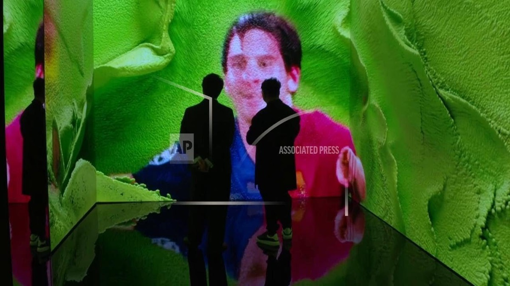
Associated Press Live Messi's favorite goal: An immersive AI art installation auctioned for charity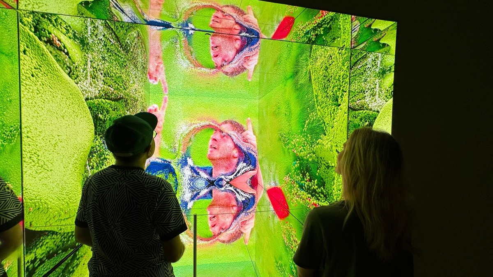
NY1 Inside the brain of Lionel Messi through art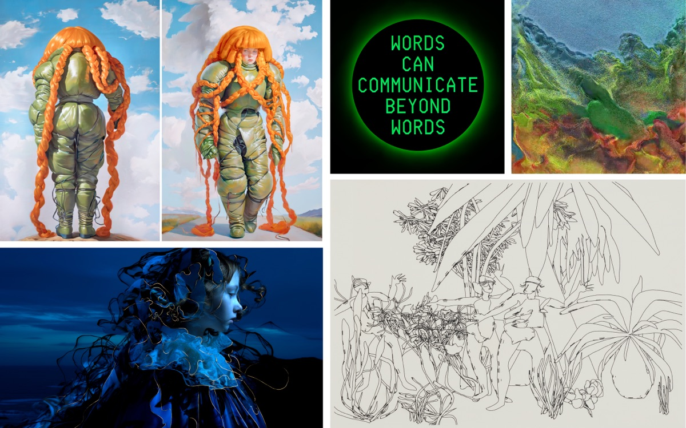
Christie's Magazine What is AI Art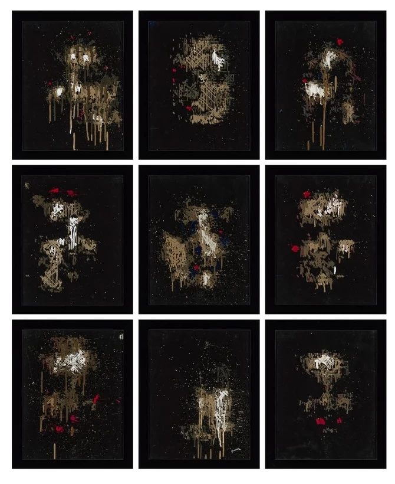
nss magazine AI Art: Revolution or Threat? The Debate Around Christie’s and Zero One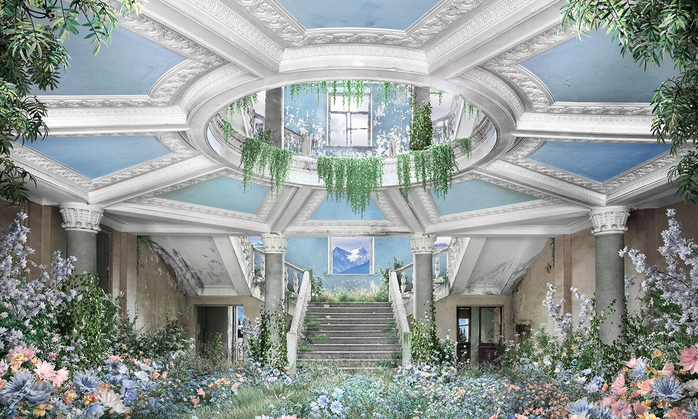
The Art Newspaper From ordinals to ownership: Christie's explores new frontiers of blockchain-based provenance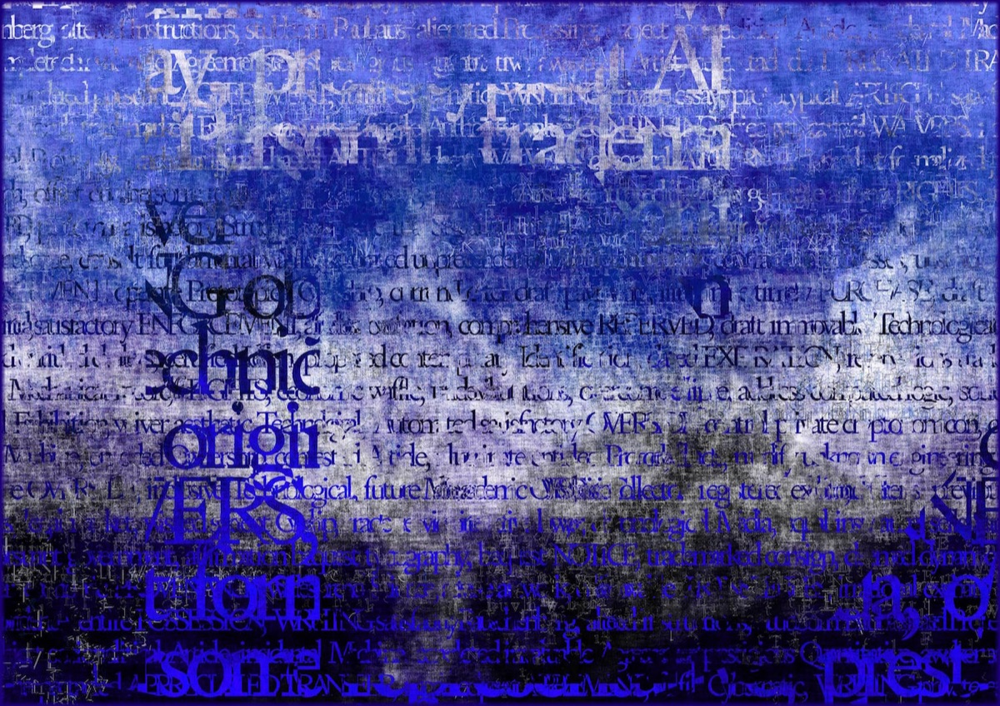
Artnet News Christie's Is Still Betting on NFTs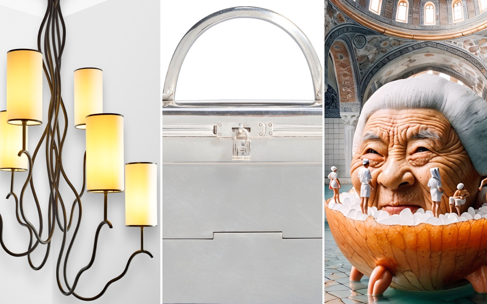
Christie's Magazine Specialists Speak: The Art and Luxury Trends on Our Radar in 2024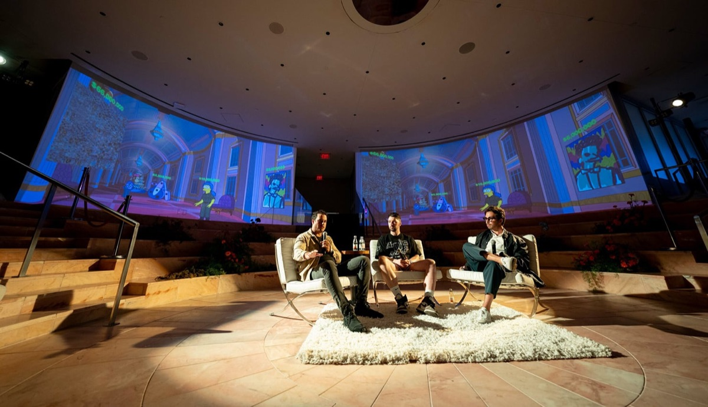
NFT Now Digital Art Takes Center Stage: Collector Perspectives at Christie's Decrypt
Gucci's Iconic Fashion Is Reimagined in Christie's NFT Art Auction
Decrypt
Gucci's Iconic Fashion Is Reimagined in Christie's NFT Art Auction
 Vogue Business
New Gucci NFTs combine fashion and art using generative AI
Vogue Business
New Gucci NFTs combine fashion and art using generative AI
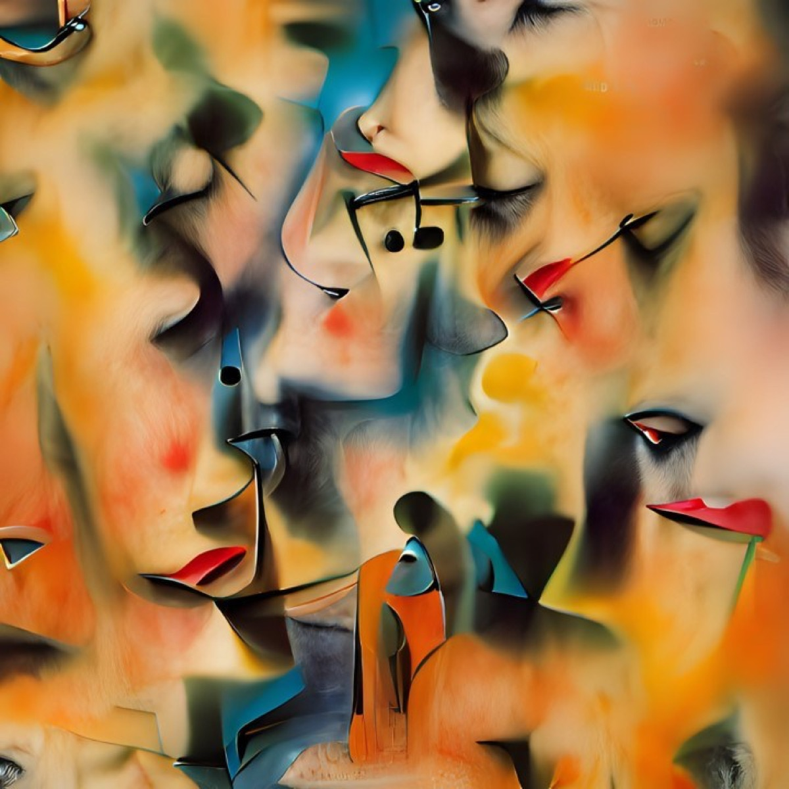
WWD Christie's, Gucci Explore Generative Art and Fashion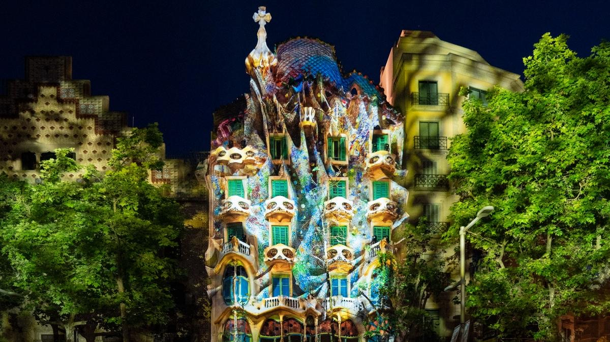
CoinDesk Beyond the JPEG: Web3 Is Expanding the Artist's Canvas